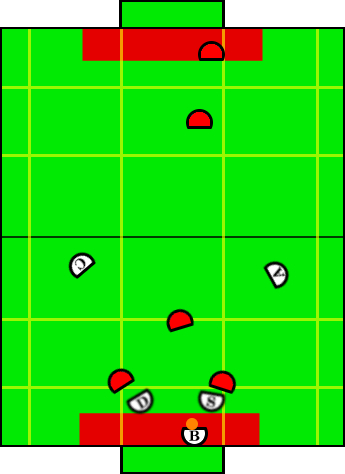

Play: Remove Ball Defense
Description:
This play is called when the blocker has possession of the ball in the
defense zone. The central goal is for the blocker to then grab and
chip-kick the ball to either the special op aggressor or aggressor which
are placed behind the half line. The creator lies slightly farther upfield
ready for a quick pass or drive upfield. The defender stays back, blocking
opponents from interfering with the blocker.
Illustration:

Positions Present:
- Blocker
- Defender
- Special Op Defender
- Aggressor
- Creator
Position Strategies:
Blocker:
- If ball is visible grab it!
- Decide to chip kick to aggressor or creator.
- Rotate to shoot at that point
- Chip kick ball to intended target, either aggressor or special op aggressor.
Blocker: RemoveBallSkill
|
Defender + Special Op Defender:
Loose Screen closest opponents outside defense zone from blocker, allowing him to
remove the ball more freely. Opponent must be in defense
zone. If no such opponent exists go to center of this area.
General idea is to play loose defense, staying back and just in front of
the defense zone. This makes is harder for the opponent to juke around us
and score since in doing so they would have to enter the defense zone and
hopefully contact our blocker. Defender plays on the opposite side of the field as the ball and the special op plays on the same side of the field as the ball.
Defender: RemoveBallScreenSkill
Special Op Defender: RemoveBallScreenSkill
|
Aggressor + Creator:
Get open for chip shot on opposite sides of the field. Aggressor goes to
side of field where ball is.
Aggressor: LookForChipKickSkill
Creator: LookForChipKickSkill
|
Transitions:
|
Once blocker triggers the chip kick, a timer is started, after
the timer goes past a threshold we transition immediately to loose
defense. We also transition to loose defense if vision data indicates the
ball is significantly far away from the blocker.
|
Position Switching:
- SpecialOpDefender, Aggressor, Creator
|
- If defender farther upfield than creator, switch
- If special op farther upfield than aggressor, switch
- Keep defender same side of the field as the ball
- Keep aggressor on same side of the field as the ball
|
|